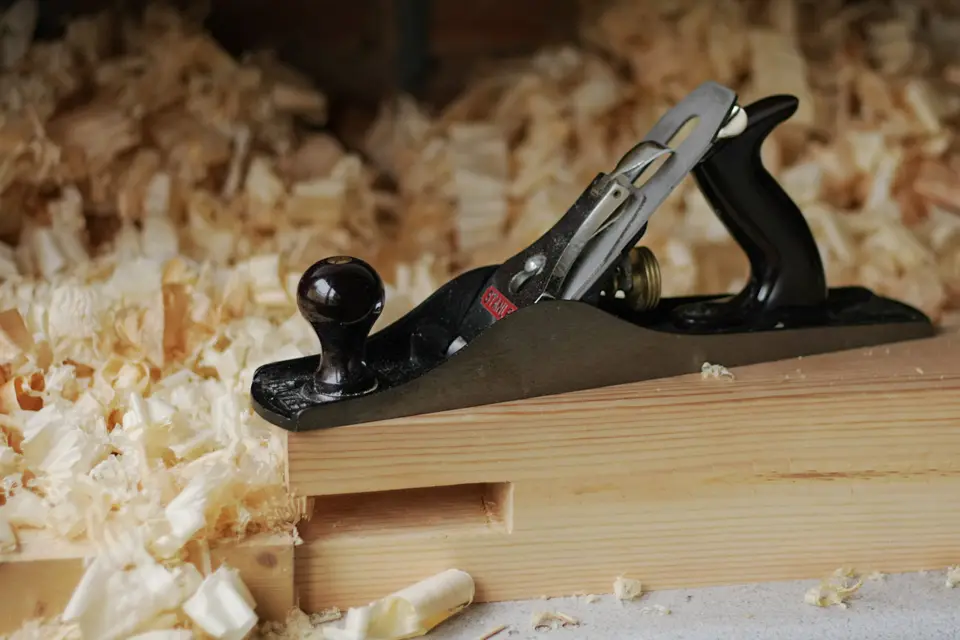
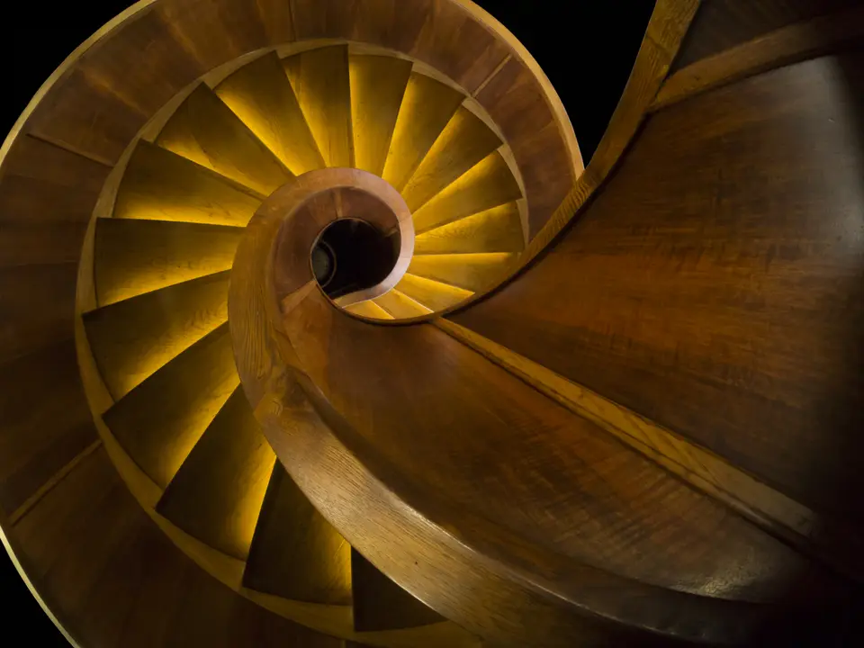
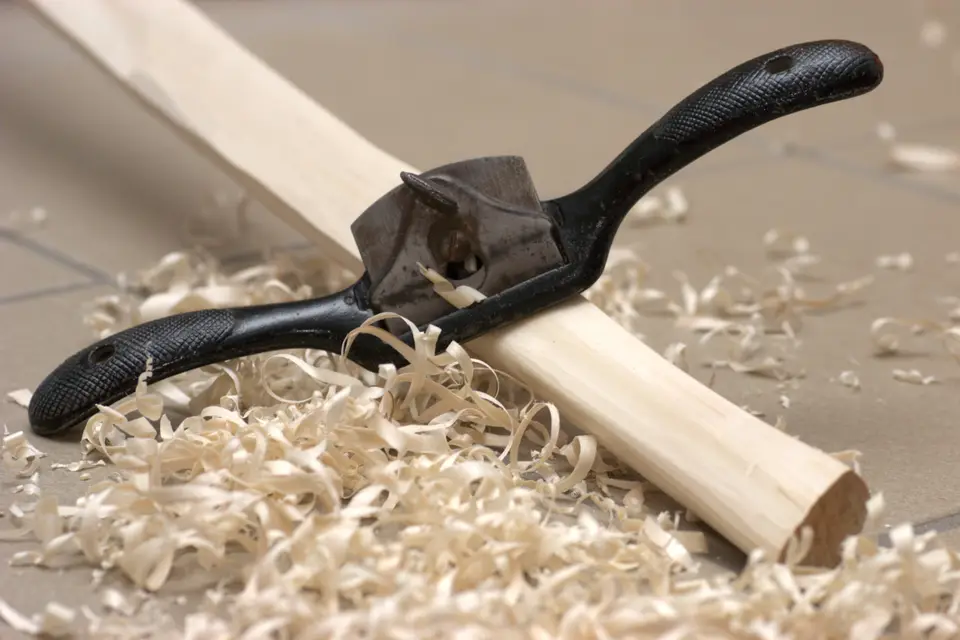
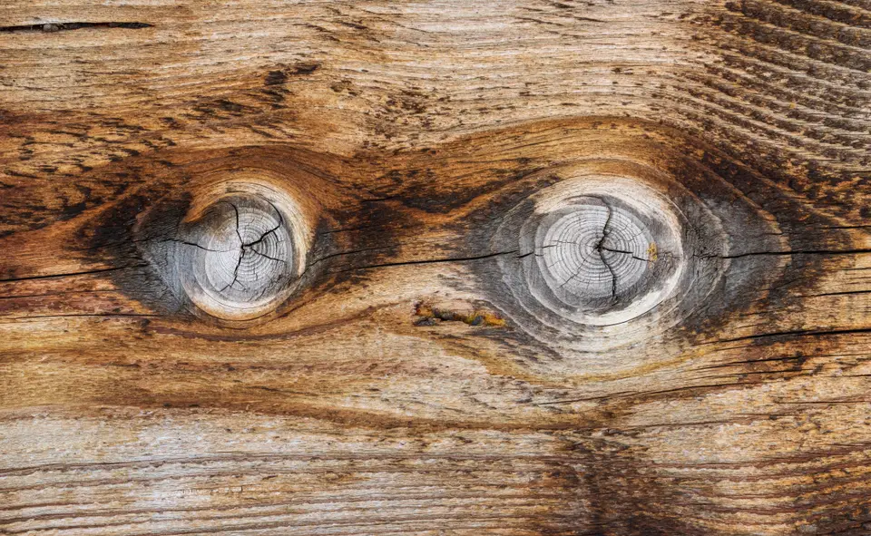
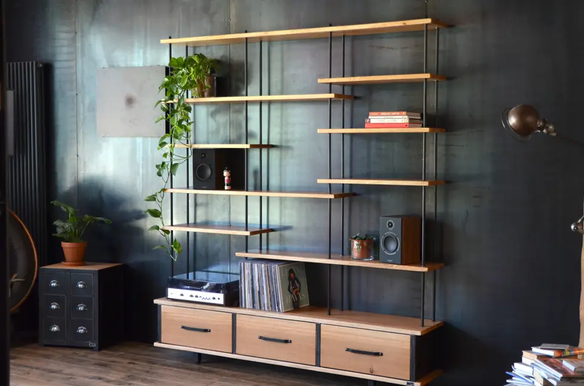
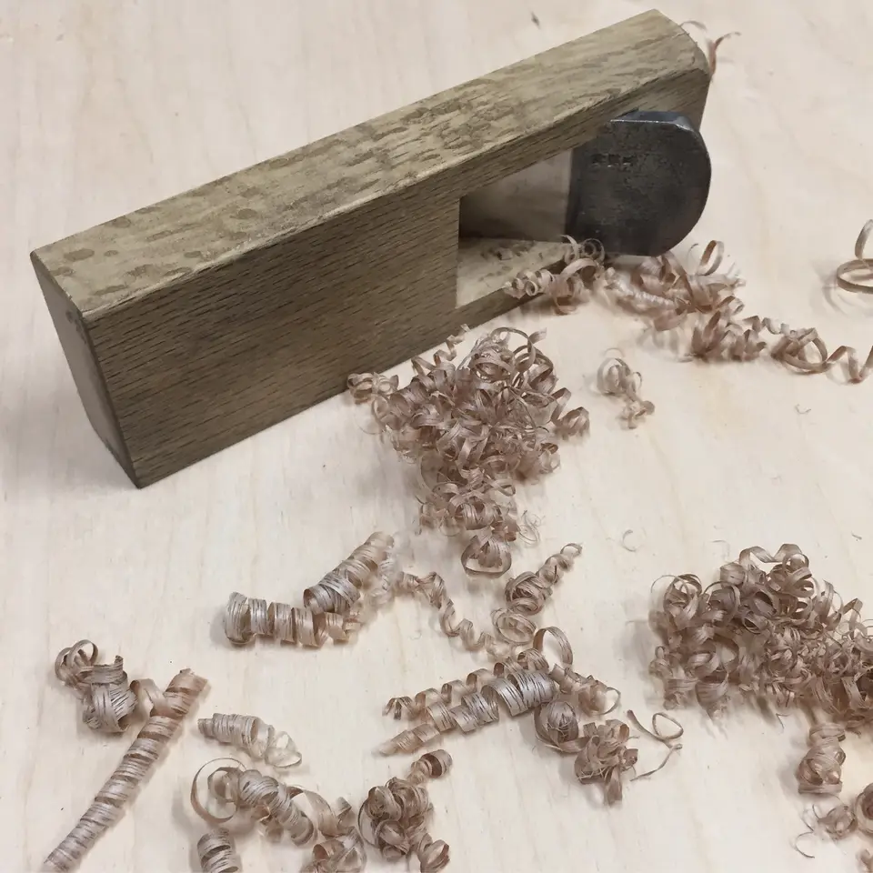

Escaliers bois sur mesure
Fabrication d'escaliers droits, tournants ou hélicoïdaux en chêne, frêne ou hêtre, avec garde-corps assortis et marches massives adaptées à votre trémie.

Artisan d'art passionné par le bois, Atelier Lestraque conçoit, fabrique et installe tous vos agencements intérieurs, escaliers et menuiseries sur mesure à Rennes et en Ille-et-Vilaine.
Assureur fictif, contrat n° DEMO-0001 : chaque chantier est couvert dix ans.
Une entreprise déclarée, établie à Rennes, joignable au 04 00 00 00 00.
Un chiffrage écrit après visite, sans surprise ni ligne cachée.
Du choix des essences nobles à l'installation minutieuse, nous intervenons sur l'ensemble de vos besoins en menuiserie intérieure et extérieure.
Fabrication d'escaliers droits, tournants ou hélicoïdaux en chêne, frêne ou hêtre, avec garde-corps assortis et marches massives adaptées à votre trémie.
Conception de placards intégrés, penderies sur mesure sous combles, séparations de pièces et rangements optimisés au millimètre près.
Création d'ensembles muraux pour salon ou bureau, mariant bois massif et panneaux plaqués avec intégration d'éclairages discrets.
Pose collée ou clouée de parquets massifs en chêne, motifs à chevrons ou point de Hongrie, avec ponçage et vitrification écologique.
Agencement de façades en bois massif, îlots centraux et plans de travail traités contre l'humidité pour une durabilité exemplaire.
Remplacement et pose de portes intérieures à fleur de cloison, verrières bois et moulures décoratives respectant le cachet de votre logement.
Découvrez une sélection d'ouvrages récents façonnés dans notre atelier avec un haut niveau d'exigence technique.






Basés au cœur du bassin rennais, nous nous déplaçons rapidement dans vos communes pour évaluer vos travaux de menuiserie.
Travaux de menuiserie sur mesure, agencement et pose d'escaliers à Rennes.
Travaux de menuiserie sur mesure, agencement et pose d'escaliers à Cesson-Sévigné.
Travaux de menuiserie sur mesure, agencement et pose d'escaliers à Bruz.
Travaux de menuiserie sur mesure, agencement et pose d'escaliers à Saint-Grégoire.
Un parcours transparent en quatre étapes pour garantir la conformité esthétique et technique de votre réalisation.
1 Prise de contact Vous décrivez vos envies, contraintes d'espace et préférences de matériaux par téléphone ou via notre formulaire.
2 Visite technique Relevé métrique précis sur votre chantier, vérification des aplombs, de l'hygrométrie et des accès.
3 Devis & sélection Remise d'une proposition détaillée avec plan d'agencement et choix définitif des essences et ferrures.
4 Fabrication & pose Usinage en atelier, assemblage soigné et installation à votre domicile dans le respect des délais convenus.
Les réponses aux questions les plus courantes avant d'engager vos travaux de menuiserie.
Pour des pièces à fort passage ou des marches d'escalier, le chêne ou le frêne garantissent une grande dureté. Pour les meubles légers ou intérieurs de placards, les bois résineux ou panneaux lattés conviennent parfaitement.
Aucun mur n'est parfaitement droit. Une visite préalable permet d'anticiper les faux aplombs, les plinthes existantes et les contraintes techniques pour un ajustement parfait.
Une finition huilée ou vernie hydrofuge protège efficacement le bois des taches quotidiennes. Un simple dépoussiérage et l'application périodique d'une cire naturelle suffisent à nourrir la matière.
Oui, l'établissement du premier diagnostic et le chiffrage estimatif de vos travaux sont entièrement gratuits et sans engagement de votre part.
Discutons de votre projet d'aménagement ou de rénovation. Nous vous répondons avec professionnalisme.